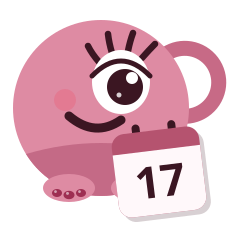

temppoBeauty1 · Como TEMPPO. La misma letra redondeada de temppo.uy, "Beauty" al lado como "Reservas". Familia clarísima.
2 · Redondeada, todo junto. Amigable y juguetona, combina con la mascota.
3 · Playfair. Serif de moda con cursiva: elegante pero con más cuerpo que la actual.
4 · DM Serif. Serif gruesa y moderna, se lee perfecta en chico.
5 · Mayúsculas espaciadas. Estilo marca de cosmética o salón premium.
6 · Quicksand. Redondeada más fina y liviana, fresca y femenina.